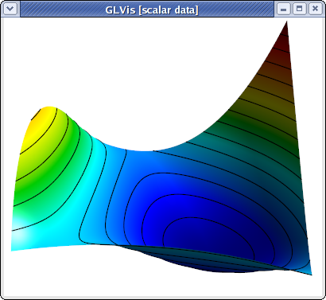

Options and Use
Quick start
- Start a socket server:
glvis - View a mesh:
glvis -m star.mesh - View a mesh with a finite element grid function:
glvis -m star.mesh -g sol.gf - View mesh and solution from a run on 4 processors:
glvis -np 4 -m mesh -g sol(assuming data saved in files:mesh.000000, ... ,mesh.000003andsol.000000, ... ,sol.000003) - Use
glvis -hto get help on all command line options. - See README.md for a detailed description of the keystroke commands accepted in the GLVis interactive window.
Some of the command-line options of GLVis and its general use are described in more details below:
Options
GLVis has a number of command-line options that allow it to be used in several
different ways. The list of all available options is given by the output of
glvis -h:
_/_/_/ _/ _/ _/ _/
_/ _/ _/ _/ _/_/_/
_/ _/_/ _/ _/ _/ _/ _/_/
_/ _/ _/ _/ _/ _/ _/_/
_/_/_/ _/_/_/_/ _/ _/ _/_/_/
Start a GLVis server:
glvis
Visualize a mesh:
glvis -m <mesh_file>
Visualize mesh and solution (grid function):
glvis -m <mesh_file> -g <grid_function_file> [-gc <component>]
Visualize parallel mesh and solution (grid function):
glvis -np <#proc> -m <mesh_prefix> [-g <grid_function_prefix>]
Visualize mesh and quadrature function:
glvis -m <mesh_file> -q <quadrature_function_file> [-qc <component>]
Visualize parallel mesh and quadrature function:
glvis -np <#proc> -m <mesh_prefix> [-q <quadrature_function_prefix>]
All Options:
-h, --help
Print this help message and exit.
-m <string>, --mesh <string>, current value: (none)
Mesh file to visualize.
-g <string>, --grid-function <string>, current value: (none)
Solution (GridFunction) file to visualize.
-gc <int>, --grid-function-component <int>, current value: -1
Select a grid function component, [0-<num-comp>) or -1 for all.
-q <string>, --quadrature-function <string>, current value: (none)
Quadrature function file to visualize.
-qc <int>, --quadrature-function-component <int>, current value: -1
Select a quadrature function component, [0-<num-comp>) or -1 for all.
-s <string>, --scalar-solution <string>, current value: (none)
Scalar solution (vertex values) file to visualize.
-v <string>, --vector-solution <string>, current value: (none)
Vector solution (vertex values) file to visualize.
-visit <string>, --visit-datafiles <string>, current value: (none)
VisIt collection to load
-sidre <string>, --sidre-datafiles <string>, current value: (none)
Sidre collection to load
-fms <string>, --fms-datafiles <string>, current value: (none)
FMS collection to load
-conduit <string>, --conduit-datafiles <string>, current value: (none)
Conduit collection to load
-dc-prot <string>, --data-collection-protocol <string>, current value: (default)
Protocol of the data collection to load
-dc-cycle <int>, --data-collection-cycle <int>, current value: 0
Cycle of the data collection to load
-np <int>, --num-proc <int>, current value: 0
Load mesh/solution from multiple processors.
-d <int>, --pad-digits <int>, current value: 6
Number of digits used for processor ranks in file names.
-run <string>, --run-script <string>, current value: (none)
Run a GLVis script file.
-k <string>, --keys <string>, current value: (none)
Execute key shortcut commands in the GLVis window.
-pal <string>, --palettes <string>, current value: (none)
Palette file.
-fo, --fix-orientations, -no-fo, --dont-fix-orientations, current option: --dont-fix-orientations
Attempt to fix the orientations of inverted elements.
-a, --real-attributes, -ap, --processor-attributes, current option: --processor-attributes
When opening a parallel mesh, use the real mesh attributes or replace them with the processor rank.
-grt <int>, --geometry-refiner-type <int>, current value: 3
Set of points to use when refining geometry: 3 = uniform, 1 = Gauss-Lobatto, (see mfem::Quadrature1D).
-sc, --save-coloring, -no-sc, --dont-save-coloring, current option: --dont-save-coloring
Save the mesh coloring generated when opening only a mesh.
-p <int>, --listen-port <int>, current value: 19916
Specify the port number on which to accept connections.
-sec, --secure-sockets, -no-sec, --standard-sockets, current option: --standard-sockets
Enable or disable GnuTLS secure sockets.
-save, --save-stream, -no-save, --dont-save-stream, current option: --dont-save-stream
In server mode, save incoming data to a file before visualization.
-saved <string>, --saved-stream <string>, current value: (none)
Load a GLVis stream saved to a file.
-ww <int>, --window-width <int>, current value: 400
Set the window width.
-wh <int>, --window-height <int>, current value: 350
Set the window height.
-wt <string>, --window-title <string>, current value: (default)
Set the window title.
-c <string>, --plot-caption <string>, current value: (none)
Set the plot caption (visible when colorbar is visible).
-fn <string>, --font <string>, current value: (default)
Set the font: [<font-name>[:style=<style>]][-<font-size>], e.g. -fn "Helvetica:style=Bold-16".
-ms <int>, --multisample <int>, current value: 4
Set the multisampling mode (toggled with the 'A' key).
-lw <double>, --line-width <double>, current value: 1
Set the line width (multisampling off).
-mslw <double>, --multisample-line-width <double>, current value: 1
Set the line width (multisampling on).
-oldgl, --legacy-gl, -anygl, --any-gl, current option: --any-gl
Only try to create a legacy OpenGL (< 2.1) context.
-hidpi, --high-dpi, -nohidpi, --no-high-dpi, current option: --high-dpi
Enable/disable support for HiDPI at runtime, if supported.
Server mode
GLVis can be used as a visualization server, where it waits for data sent by socket connections from applications and visualizes each socket stream in a separate interactive window:

To establish the GLVis server, open a new terminal and start the GLVis application without any options:
glvis
By default, the server is established on
port 19916, but
this can be changed with the -p option.
To save the incoming data, the server needs to be started with
glvis -save
With the -save option, all socket streams will be saved in
incrementally named files glvis-saved.0001, glvis-saved.0002, and so on.
These socket files consist of a data type identifier:
mesh, solution, psolution, quadrature or pquadrature,
followed by a mesh and a finite element function. For example:
solution
MFEM mesh v1.0
dimension
2
elements
1
1 3 0 1 2 3
boundary
4
1 1 1 0
1 1 2 1
1 1 3 2
1 1 0 3
vertices
4
nodes
FiniteElementSpace
FiniteElementCollection: Quadratic
VDim: 2
Ordering: 0
0
1
1
0.1
0.5
0.9
0.5
0
0.45
0
0
1
0.9
-0.05
0.5
1
0.5
0.55
FiniteElementSpace
FiniteElementCollection: Quadratic
VDim: 1
Ordering: 0
0
0
0
0
0
0
0
0
1
Note that the mesh portion of the above file is the MFEM mesh v1.0 version of the quad.vtk mesh from the curvilinear VTK tutorial.
The *.saved files contain an exact copy of the socket data stream which can
be visualized later as follows:
glvis -saved glvis-saved.0001
Below is the result for the above socket data using the following GLVis keystrokes in the OpenGL window: AmttOO followed by multiple refinements with o and move/zoom adjustments with the mouse.

Visualizing meshes
GLVis can also be employed in non-sever mode, e.g. to visualize a mesh file:
glvis -m quad.vtk
The optional -k parameter specifies a set of keystrokes, which will be passed
directly to the GLVis window, see, e.g., the examples in the
mesh formats tutorial.
Two dimensional meshes are shown with elements in multiple colors, corresponding
to a piece-wise constant function with different values in neighboring elements.
This function can be generated and saved with the -sc option, which writes it
in a file called GLVis_coloring.gf.
Alternatively, the mesh can be loaded from a data collection (VisIt, Sidre, FMS,
or Conduit). Path to the collection is provided through the respective command
line parameter (-visit, -sidre, -fms or -conduit). Optionally, the
cycle and protocol can be set by -dc-cycle and -dc-prot parameters.
Visualizing functions
There are several ways to visualize a function on a given mesh. For example we can visualize the coloring function for the mesh beam-hex.mesh as follows:
glvis -m beam-hex.mesh -sc
glvis -m beam-hex.mesh -g GLVis_coloring.gf
The result is:

As another example, consider the finite element grid function quad.gf embedded
in the socket stream glvis-saved.0001 discussed above:
FiniteElementSpace
FiniteElementCollection: Quadratic
VDim: 1
Ordering: 0
0
0
0
0
0
0
0
0
1
Then
glvis -m quad.vtk -g quad.gf
will produce identical result to glvis -saved glvis-saved.0001.
Vector-valued grid functions are also supported. For example, consider the
following data saved in a file named quad-vec.gf
FiniteElementSpace
FiniteElementCollection: Quadratic
VDim: 2
Ordering: 0
0
0
0
-0.1
0
0.1
0
0
0.05
0
0
0
0.1
0.05
0
0
0
-0.05
which corresponds to the Q2 vector field transforming the quad.vtk
quadrilateral into the unit square:

The above plot was produced with:
glvis -m quad.vtk -g quad-vec.gf -k "RjlAmeOOooooooooooobbvuuuuuuuuuuu************"
The transformation between the two domains can be further explored with the b and n keys.
One can also visualize the different components of a vector field as scalar
functions using the -gc option, e.g.
glvis -m quad.vtk -g quad-vec.gf -gc 1
gives after some manipulations the following plot:

Moreover, GLVis supports the visualization of functions with values provided only
in the vertices of the mesh. This is only supported for non-curved meshes! The
scalar and vector case are handled by the -s and -v options respectively.
Here is an example with the
beam-quad.mesh
mesh file and a solution saved in a file beam-quad.sol:
solution
1
2
3
4
5
6
7
8
9
10
11
12
13
14
15
16
17
18
glvis -m beam-quad.mesh -s beam-quad.sol -k "Amaa"
Note that the data in this type of solution files starts from the second line
(the first line contains an identifier). The vector format for the -v option
is similar, with all the x-components of the field listed first, followed by
all the y-components, etc.
Finally, the function can be loaded from a data collection. Start with loading
the collection as for visualization of meshes and
specify name of the field through the -g parameter.
Visualizing quadrature data
GLVis can also visualize quadrature data (QuadratureFunction in MFEM). As an
example, we may modify the Laplace problem from Example 1
in MFEM to produce the following quadrature data for linear elements on
data/star-q2.mesh
mesh:
QuadratureSpace
Type: default_quadrature
Order: 2
VDim: 1
0.31230931
0.26439977
0.26899615
0.21618069
0.31395881
0.26847144
0.27055581
0.21422246
0.31382331
0.27104673
0.26796573
0.21605458
0.3123637
0.26757589
0.26559942
0.21459966
0.31153282
0.26609827
0.26447499
0.21646139
0.19469524
0.052168431
0.15524982
0.041599065
0.11105477
0.029757035
0.029757035
0.0079733734
0.19964714
0.15657668
0.05349529
0.041954596
0.19860568
0.053216231
0.15268989
0.040913132
0.10716797
0.028715571
0.028715571
0.0076943141
0.20085128
0.15329159
0.053817938
0.041074359
0.20141928
0.053970134
0.15541141
0.041642362
0.10928779
0.029283575
0.029283575
0.0078465102
0.19809997
0.154522
0.053080726
0.041404046
0.19810132
0.053081088
0.15452705
0.041405398
0.10929283
0.029284927
0.029284927
0.0078468725
0.19597197
0.15395649
0.052510531
0.041252518
0.19674926
0.052718805
0.15685739
0.04202981
0.11219373
0.030062219
0.030062219
0.0080551473
0.19500042
0.15638879
0.052250205
0.041904249
Saving the example as star.qf, this quadrature data can be then visualized
by the following command (assuming a link to star-q2.mesh is in the directory):
./glvis -m star-q2.mesh -q star.qf
This produces the following different representations of the quadrature data, which can be switched by pressing the Q key:
| LOR | Interpolation | Projection |
|---|---|---|
 |
Finally, loading of quadratures from data collections is supported. Start with
loading the collection as for visualization of meshes
and specify name of the Q-field through the -q parameter.
GLVis scripts
GLVis can also run a batch sequence of commands, called GLVis scripts, which are useful for saving particular visualization scenes, as well as to generate still frames for animations.
Scripts are executed with glvis -run. For example, consider the following
script, saved in a file quad-vec.glvs:
# Visualization window geometry
window 0 0 300 300
# Initial solution
solution quad.vtk quad-vec.gf
# Setup the GLVis scene. Executed after pressing the space bar.
{
perspective off
view 0 0
viewcenter 0 0
zoom 1.95
keys AmeOOooooooooooobbvuuuuuuuuuuu
}
# Take multiple screenshots. Executed after pressing the space bar.
{
keys b
solution quad.vtk quad-vec.gf screenshot quad-vec.00.png
keys b
solution quad.vtk quad-vec.gf screenshot quad-vec.01.png
keys b
solution quad.vtk quad-vec.gf screenshot quad-vec.02.png
keys b
solution quad.vtk quad-vec.gf screenshot quad-vec.03.png
keys b
solution quad.vtk quad-vec.gf screenshot quad-vec.04.png
keys b
solution quad.vtk quad-vec.gf screenshot quad-vec.05.png
keys b
solution quad.vtk quad-vec.gf screenshot quad-vec.06.png
keys b
solution quad.vtk quad-vec.gf screenshot quad-vec.07.png
keys b
solution quad.vtk quad-vec.gf screenshot quad-vec.08.png
keys b
solution quad.vtk quad-vec.gf screenshot quad-vec.09.png
keys b
solution quad.vtk quad-vec.gf screenshot quad-vec.10.png
}
The # lines above indicate comments, while the braces separate the different
sequences of commands that are executed together. GLVis will pause between these
execution blocks, waiting for the user to press the space bar in order to
continue. The solution command above updates the mesh and the finite element
function plotted, without changing any other visualization parameters, while
screenshot uses libpng (or
LibTIFF, or
xwd depending on the build
configuration) with
ImageMagick's convert utility
to save a picture in the specified format. There are a number of additional
script commands available, the complete list of which can be found (and
extended) by examining the
glvis.cpp source code.
Executing
glvis -run quad-vec.glvs
and pressing the space bar twice in the GLVis window generates a sequence of screenshots, which can be animated, e.g., with
convert -delay 20 quad-vec.??.png quad-vec.gif
The generated animated GIF file is shown below (you may need to reload the page to see the animation):

More examples of animations produced with GLVis scripts can be found at the BLAST website, e.g., here and here.
{kind=link}
{kind=link}